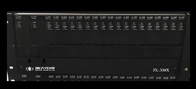
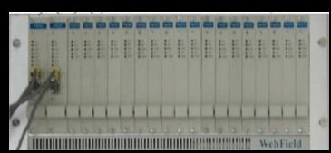
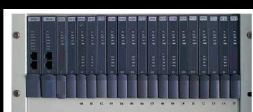
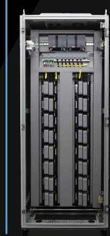
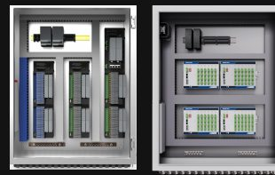
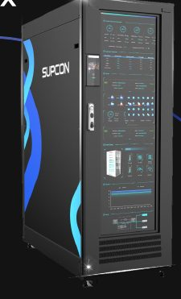

SCROLL
01 · UCS 核心价值
新特征，
继承传统。
新特征
极简架构，工业云实时系统、云计算、AI-Inside，敏捷、开放、长生命周期继承传统
高可靠，高安全，高稳定、内建网络安全设计01更灵活
02更可靠
03更节省
04更智能
05更人性
02 · UCS 极简架构
计算 · 连接 · 感知
全光网络，直达现场。
控制数据中心通过全光工业网，直连 APL / SmartEIO 接线箱与现场仪表，构建全数字化智能现场。
- 计算 — 控制数据中心
- 连接 — 全光工业网
- 感知 — APL / SmartEIO 接线箱 · 仪表
网络化 I/O 系统APLSmartEIOWirelessGatewayIPv6
03 · 控制数据中心
高可靠的
数据中心。
标准机柜交付，支持设计转换。关键部件全面冗余，全数据中心软硬件诊断。
- 关键部件冗余：电源、风扇、硬盘、网卡等
- 环境诊断 · 服务器硬件健康状态
- NyxOS 关键模块监测及日志审计 · 控制服务的监测守护
- 软件定义存储网络，高容错，自动切除故障硬盘
99.999%
硬件可用性
* 三维模型为示意，非实际产品结构
04 · 更灵活
便捷扩展，
便捷部署。
- 操作节点便捷扩展 — 操作节点在控制数据中心内为模块化部署，可一键拷贝；定义 IP 后即可在瘦客户端 Web 访问
- 现场节点便捷扩展 — 机柜间无需新增任何部件；现场完成接线后即可接入全光网络；点位可分配至任意控制服务
- 算力便捷扩展 — 部署新服务器后一键扩容、自动安装，10 分钟内实现控制数据中心算力、内存以及存储的扩展
- 便捷交付、一键部署 — 云组态、多人组态；应用仓库快捷部署；无需每一台操作站工程师站升级；无需考虑过多软硬件耦合性
10分钟内
算力 · 内存 · 存储扩展
60+ 年
工厂寿命
05 · 更可靠
冗余方式，
从 1:1 到 1:N。
高可靠、高可用性设计。控制硬件与控制服务均实现 1:N 冗余，监控和协调关键的实时任务。
- 单周期无干扰切换
- 多态冗余 — 热 · 温 · 冷
- 备用节点按需自动生成
控制服务 A 运行于 Node0 · 热备 A′ · 冷备 A″
06 · 更节省
更少的柜，
更少的线。
从客户端、控制数据中心，到 SmartEIO / APL 现场接线箱与常规 / APL 现场仪表 —— 传统架构中的 IO 柜、端子板柜、隔离栅柜层级不再出现。
0%↓
机柜空间
0%↓
线缆
0%↓
项目周期
07 · 更智能
Nyx × AI 控制
= 提高生产力。
GPU 赋能的控制引擎 NyxEngine。
- AI-PID — 回路级的自主运行
- AI 预测性维护 — 设备平台的有效结合
- AI 辅助编程 — 工业专用 GenAI
- AI 未来画笔 — 回路级数据未来趋势预测
Technology Value
UCS 系统的技术价值
从全数字化智能现场，到统一数据模型、AI-Inside，最终迈向自主运行。
自主运行
自控率平稳度操作频次报警频次运维效率……
AI-INSIDE
报警管理AI-PIDAI 报警预测态势感知 HMI视觉 AIIDMAI 编程
OT 数据 OPC UA 信息模型
S-DIM 统一数据模型
网络化 I/O 系统 IPv6
APLSmartEIOWirelessGateway
全数字化智能现场
时间序列大模型 TPT
智能数据 · 算法 · 算力 → 时间序列大模型 TPT
智能数据INTELLIGENT DATA
算法AI ALGORITHM
算力COMPUTING POWER
Platform
Universal Control System (Nyx)
NyxOS — Cloud Base Real-time Control。实时控制、过程监控、应用服务分层构建，零信任网络安全策略贯穿始终；上层融合时间序列大模型 TPT。
时间序列大模型 TPT
自主优化自主监督知识问答数据分析运行报告
先进控制操作导航报警管理PID 整定
Universal Control System (Nyx)
应用服务
IDMOPC UA历史数据
过程监控
高性能 HMI报警 & 事件第三方通信
实时控制
IEC 61131-3AI-PIDAI-ST
NyxOS — Cloud Base Real-time Control
APLSmartEIOI/O
零信任网络
安全策略网络安全
防护体系
安全策略网络安全
防护体系
Specifications
关键数据与技术规格
99.999%
硬件可用性
关键部件冗余
1:N
控制冗余方式
由 1:1 转化为 1:N
10分钟内
一键扩容
算力、内存以及存储的扩展
60+ 年
工厂寿命
控制服务 · Nyx 系统 · 服务器硬件
90%
机柜空间
更节省
80%
线缆
更节省
50%
项目周期
更节省
GPU
控制引擎 NyxEngine
GPU 赋能
| 系统架构 | 极简架构：控制数据中心 + 全光工业网 + APL / SmartEIO 现场接线箱 + 现场仪表 |
|---|---|
| 系统平台 | NyxOS — Cloud Base Real-time Control；工业云实时系统、云计算、AI-Inside |
| 控制引擎 | GPU 赋能的控制引擎 NyxEngine |
| 实时控制 | IEC 61131-3 · AI-PID · AI-ST · C++ / Python |
| 过程监控 | 高性能 HMI · 报警 & 事件 · 历史趋势 · 第三方通信 |
| 应用服务 | IDM · OPC UA · 历史数据 · 全域诊断 · AI-Inside Apps |
| 冗余设计 | 控制硬件 1:N 冗余、控制服务 1:N 冗余；单周期无干扰切换；多态冗余（热 / 温 / 冷）；备用节点按需自动生成 |
| 可用性 | 硬件可用性达 99.999%；关键部件冗余：电源、风扇、硬盘、网卡等 |
| 诊断 | 环境诊断；服务器硬件健康状态；NyxOS 关键模块监测及日志审计；控制服务的监测守护 |
| 存储 | 软件定义存储网络，高容错；自动切除故障硬盘 |
| 现场 I/O | 网络化 I/O 系统：APL · SmartEIO · Wireless · Gateway；IPv6；全光网络接入 |
| 数据模型 | S-DIM 统一数据模型；OPC UA 信息模型 |
| 网络安全 | 零信任网络安全策略；内建网络安全设计 |
| 访问方式 | 瘦客户端 Web 访问；客户端 · 移动设备 |
| 工程与交付 | 标准机柜交付，支持设计转换；云组态、多人组态；应用仓库快捷部署 |
| AI 能力 | AI-PID · AI 预测性维护 · AI 辅助编程 · AI 未来画笔；时间序列大模型 TPT |
Case Study
某氯碱公司
数字化工厂示范项目
工业 AI + 自主运行
30万吨 氯碱3.5万吨 钾碱7.5万吨 双氧水和 TMAH共计 15000点
60%
降低建设成本
67%
提升人效
全面规模应用
首个万点以上规模 UCS 项目
融合应用
UCS + TPT 融合应用，更智能、更节省
广泛的适配场景
进口系统全面替代：7000 点西门子、4000 点艾默生
数据基座
融合“运行、设备、质量、模拟”四大数据基座
Heritage
中控控制系统里程碑
1993
JX-100

1996
JX-300X

2001
ECS-100

2005
JX-300XP

2007
ECS-700

2021
OMC · SmartEIO、APL

2024
Nyx
30,000+ 家
为超过 30,000 家企业提供服务
No.1
自 2011 年以来，中国市场占有率第一
56.3%
化工 · 中国工业市场份额
49.3%
石油 · 中国工业市场份额
18 套千万吨级炼油项目和 28 套大型乙烯项目
Trends
工业控制系统的发展趋势
建设“更智能、更高效生产”的智慧工厂。
从封闭式系统向开放式系统
从单机到虚拟化集群控制
从传统架构向数字化、智能化、网络化
从传统感知到图像识别智能决策
从传统 UI到 Web 化展示千人千面
从单装置监控到管控一体化集成
从传统的数据采集展示到数字孪生
从设备维护到预测性维修
从传统经验知识模型到 AI 大模型
中控 · SUPCON
让工业更智能，
让客户更成功。
愿景
成为工业AI全球领先企业，用AI推动工业可持续发展
使命
让工业更智能，让客户更成功
价值观
客户至上、合作创新、自律诚信、自我驱动
员工理念
开心、充实、有价值、受尊重